Investigating stress-reduction effects of culinary activities through wearable monitoring
We studied whether everyday cooking behaviors (snacking, assembly, cooking, baking) produce measurable changes in physiological stress (ECG, GSR) and perceived stress (modified PSS-4).
Overview
Motivation
Stress is pervasive and impacts long-term health. Wearables can detect stress responses, but less work models the daily behaviors that might help people regulate stress. Cooking is a promising coping behavior: it can be mindful, sensory, and routine.
Research Question
Do different culinary activities produce different acute changes in stress? We compared four categories: snacking (≤30s), assembly (≤10m), cooking (stovetop), and baking (oven).
Methods
Participants
College juniors/seniors who cook at least once per day. Convenience sampling due to time constraints. We recorded multiple activities per participant for intra-subject comparison.
Procedure
- 2 minutes seated baseline (ECG + GSR)
- Modified PSS-4 ("right now")
- Complete one culinary activity
- 2 minutes seated post (ECG + GSR)
- Modified PSS-4 again
Analysis
We tested normality (Shapiro-Wilk, α = 0.05). Depending on normality, we used paired t-tests or Wilcoxon signed-rank tests with Bonferroni correction (p < 0.008 across 6 pairwise comparisons). We also reported effect sizes and ran OLS regression per metric.
Signals and Processing
ECG
Heart rate and HRV were derived using a modified Pan-Tompkins pipeline (band-pass filter, differentiate, square, moving window integration) and cleaned to physiologically realistic RR intervals (0.5s to 1.5s).
GSR
We decomposed electrodermal activity into tonic (SCL) and phasic (SCR) components. From phasic GSR, we also counted peaks and computed a zero-crossing rate.
Figures
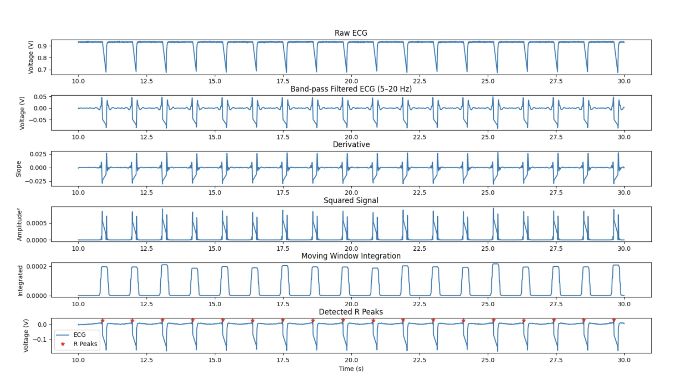
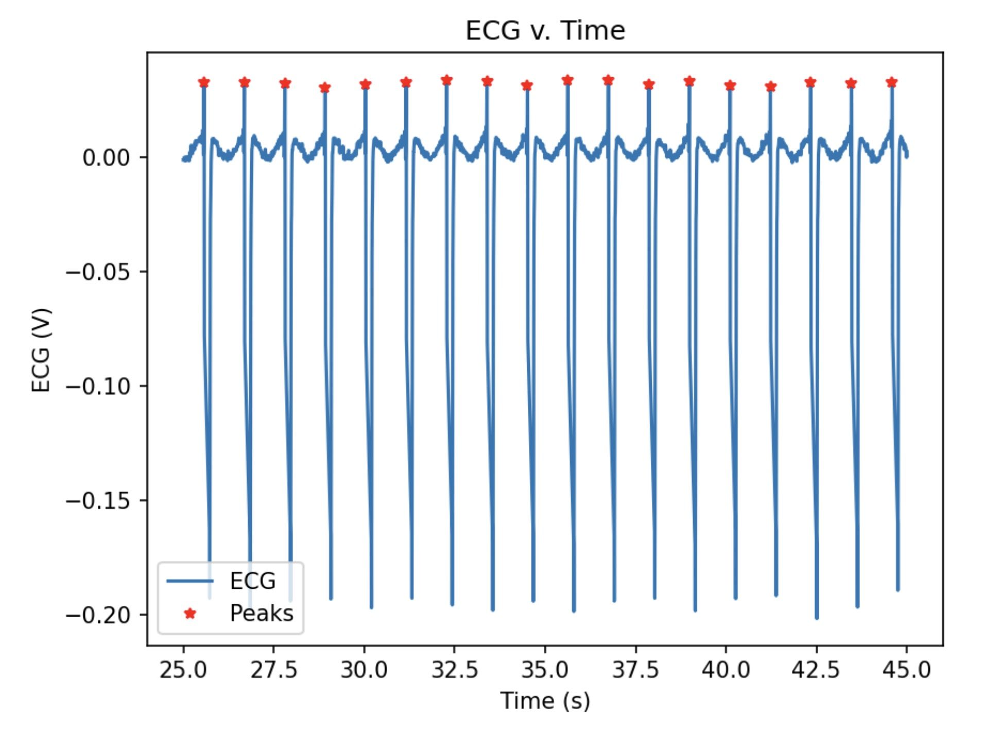
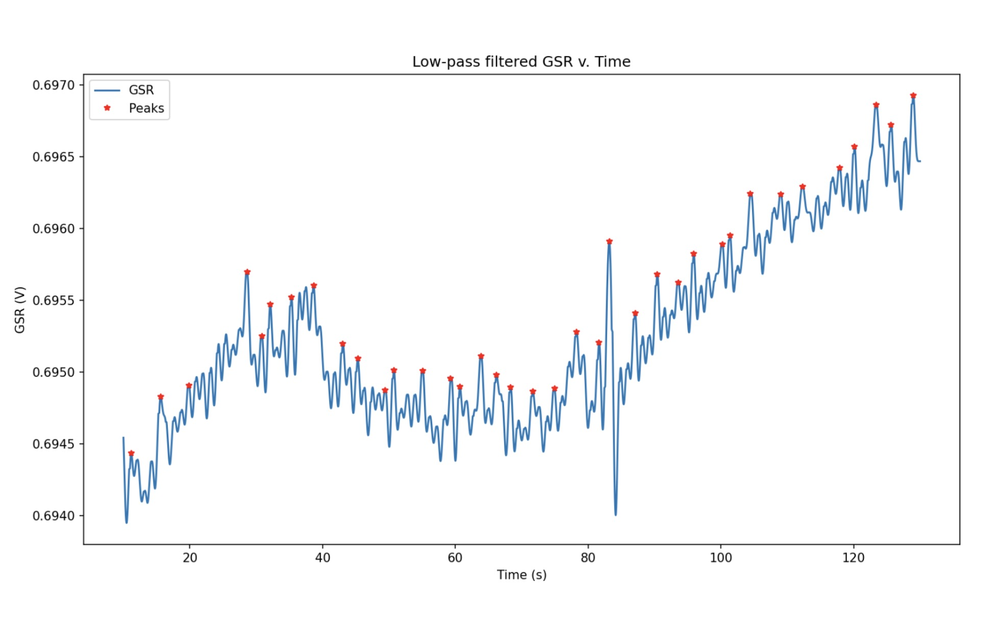
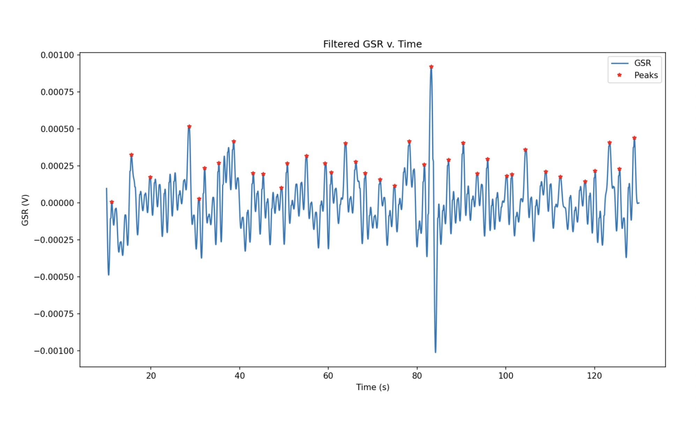
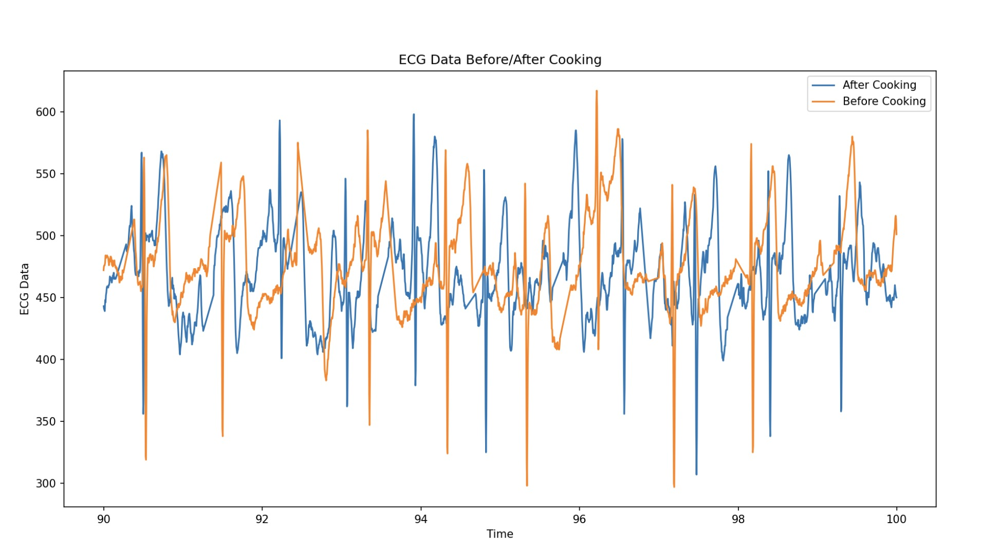
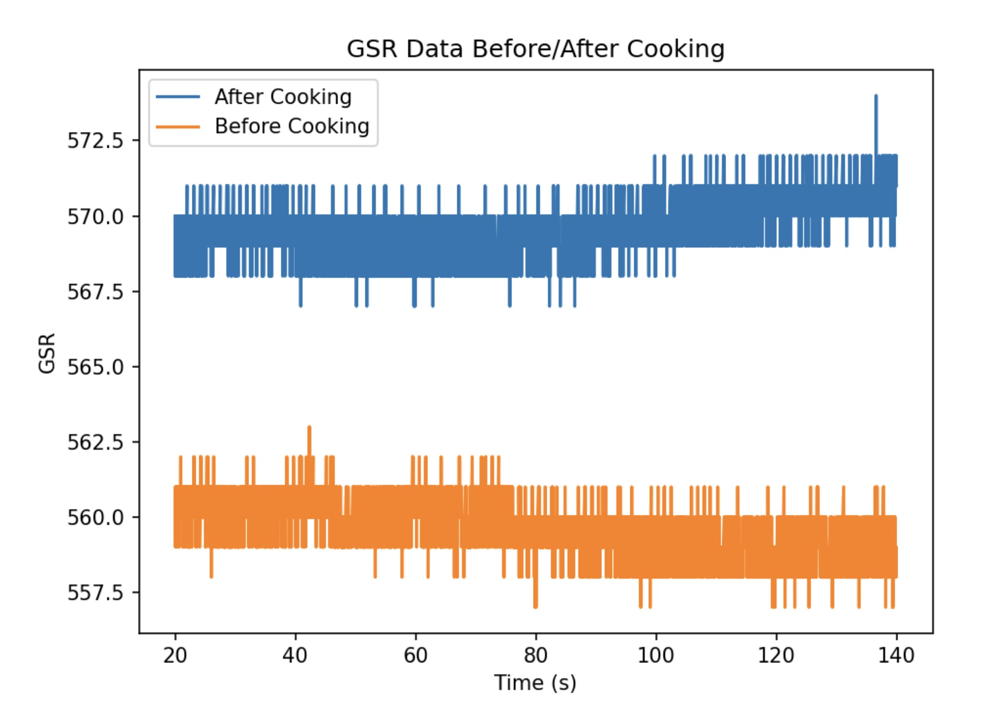
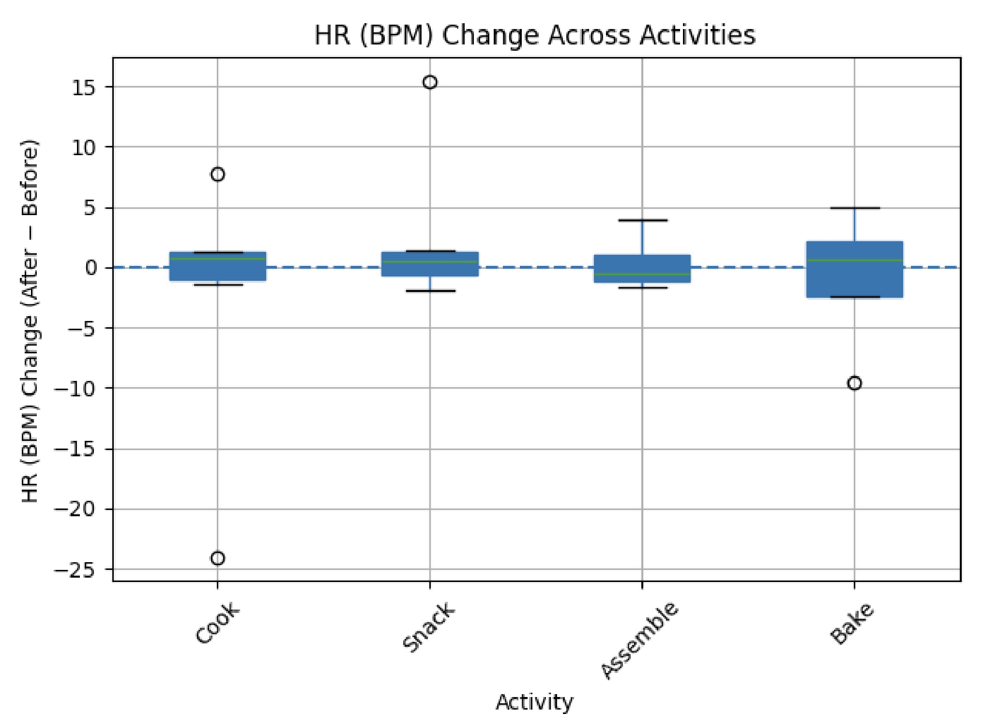
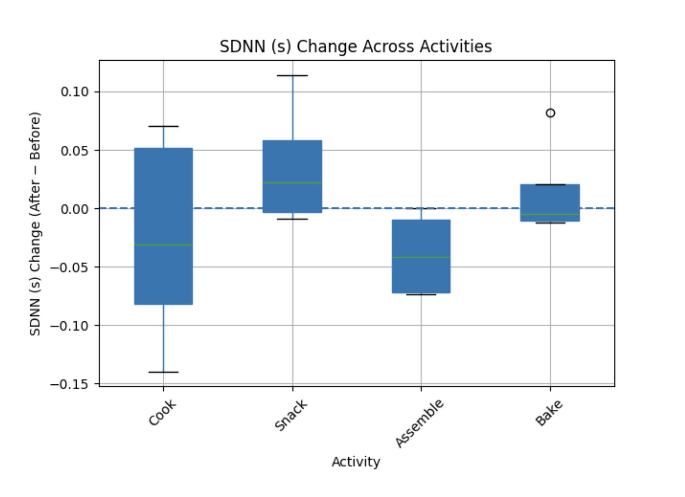
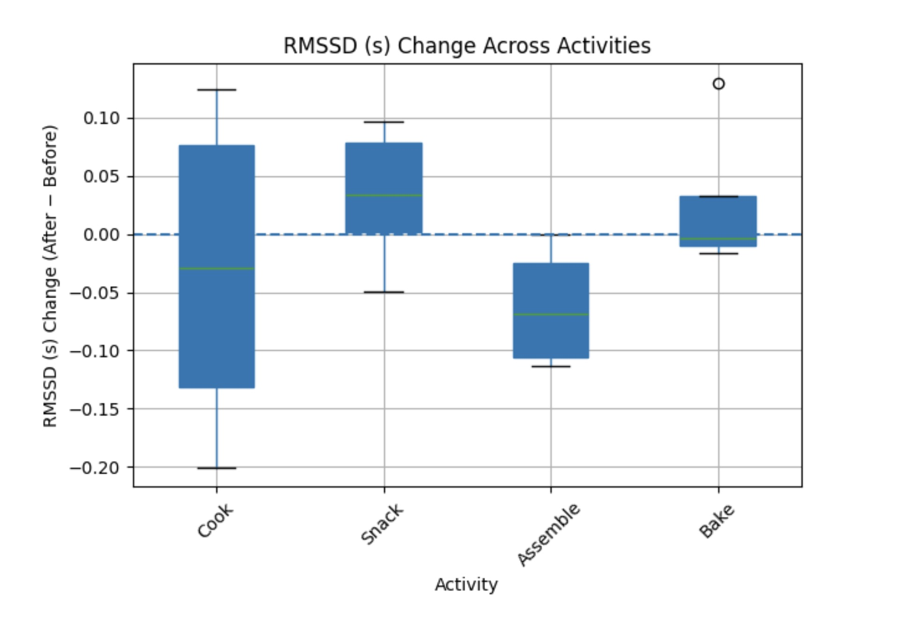
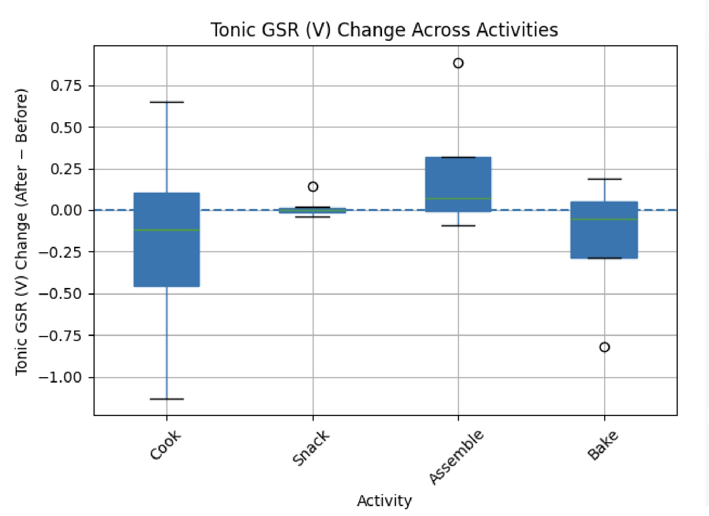
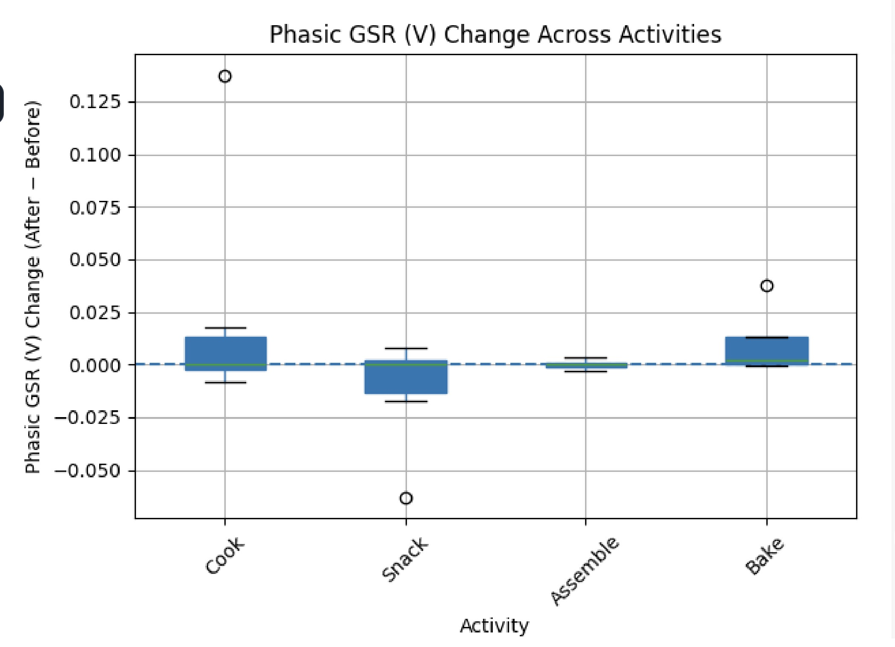
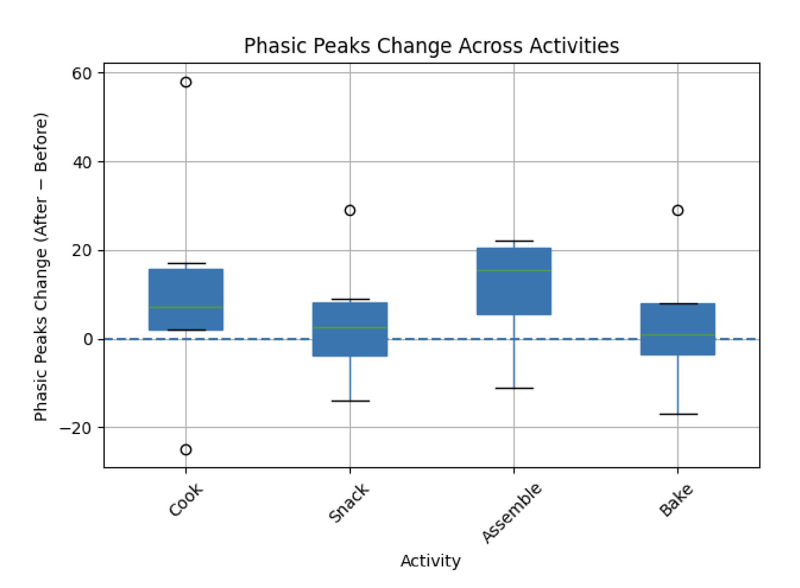
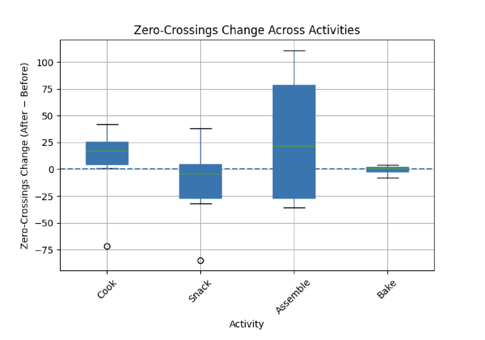
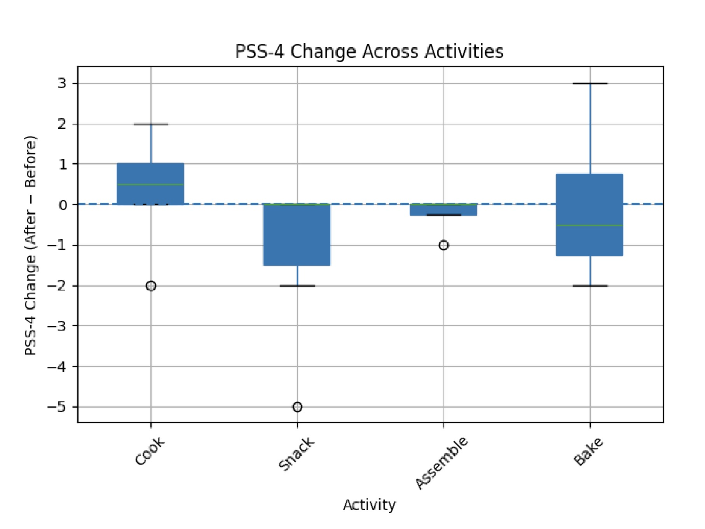
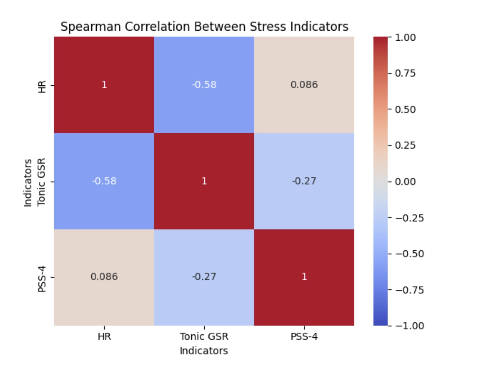
Results
Effect Size Shortlist (Moderate to Large)
With low power, effect sizes help surface potential trends even when p-values are not significant.
| Activity | Metric | Effect Size | Magnitude | Stress |
|---|---|---|---|---|
| Assembly | SDNN | -0.710 | Moderate | ↑ |
| Assembly | RMSSD | -0.586 | Moderate | ↑ |
| Assembly | PSS-4 | 0.572 | Moderate | ↑ |
| Cooking | SDNN | 1.025 | Large | ↓↓ |
| Cooking | RMSSD | 1.145 | Large | ↓↓ |
| Cooking | Tonic GSR | -0.531 | Moderate | ↓ |
| Cooking | Phasic Peaks | -0.695 | Moderate | ↓ |
| Cooking | PSS-4 | 0.500 | Moderate | ↑ |
| Baking | Phasic GSR | 0.600 | Large | ↑↑ |
| Snacking | Phasic GSR | 0.333 | Moderate | ↑ |
| Snacking | Phasic Peaks | -0.404 | Moderate | ↓ |
Correlation Snapshot
Spearman correlation analysis suggested a strong inverse relationship between HR and GSR in several conditions, while perceived stress (PSS-4) did not consistently align with physiological markers.
Takeaway
Across a small sample, we fail to reject the null hypothesis: No culinary activity affects stress levels.
The most important next step is increasing sample size and reducing sensor noise to improve power and measurement quality.
Discussion
Interpretation
Stress responses varied by person, and the same activity could look “stressful” in one metric but not another. This is consistent with psychophysiology: perceived stress does not always track physiological arousal.
Limitations
- Small sample size (low statistical power).
- Sensor noise and movement artifacts (ECG + GSR are sensitive to setup and motion).
- Convenience sampling may limit generalizability.
- Contextual stressors (exams, deadlines) not controlled.
- Non-randomized activity order may introduce carryover effects.